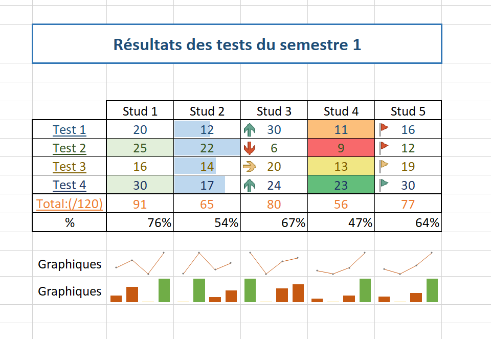
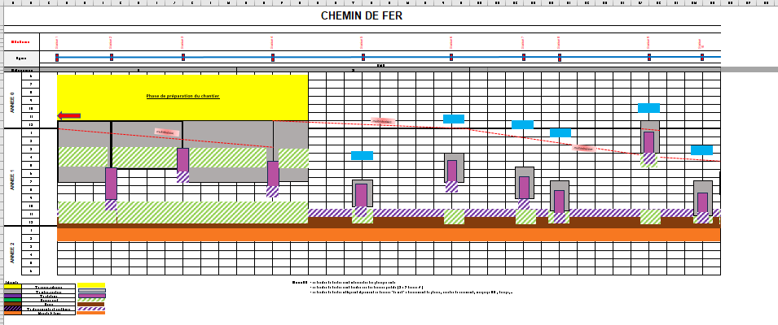

Replonger dans le monde d'Excel
Tags :
- MON
- 2023-2024
- temps 3
Auteurs :
- Khaoula BELAAZIZ
.
Ce MON a pour objectif revoir les bases d'Excel et apprendre à maîtriser cet outil. Je vais commencer par me baser sur le MON de Lola Excel - Repartir sur de bonnes bases et le MON de Henri Un peu d'Excel/Google Sheets pour mourir moins idiot
Rafraîchir sa mémoire sur les trucs cool d'Excel
J'ai commencé par lire et appliquer les cas pratiques du MON de Lola, en parcourant le site du cours qu'elle a suivi : Formation Excel. Cependant, le site ne m'a pas captivé, alors j'ai cherché des tutoriels plus dynamiques et concis. Je suggère cette série de vidéos qui aborde l'essentiel de façon efficace Cours complet Microsoft EXCEL, vous trouverez les bases suivantes:
- Les POURCENTAGES, Fcts Max/Min
- Créer un GRAPHIQUE avec EXCEL et l'améliorer
- TRIER et FILTRER une LISTE (base de données)
- Utiliser la MISE EN FORME automatique CONDITIONNELLE
- NBVAL et NB.SI
- Les MINI-GRAPHIQUES d'une case (Graphiques Sparkline)
- Utiliser la FONCTION SI Condition à 2 possibilités, à 3 possibilités ou PLUS (si imbriqués)
- Les fonctions ET et OU + utilisation avec SI
- ALEA, ALEA.ENTRE.BORNES et TABLEAU.ALEA (Les nombres aléatoires (tirage au sort))
- Créer une LISTE DÉROULANTE
- La VALIDATION des DONNÉES (Créer un formulaire sans erreur d'encodage)
- Les fonctions RECHERCHEV et RECHERCHEH
- Créer un TABLEAU CROISÉ DYNAMIQUE + GRAPHIQUE
- La fonction RANG (établir un classement)
- Réaliser un CLASSEMENT AUTOMATIQUE
- Créer une CARTE GÉOGRAPHIQUE automatique (statistiques par pays, régions et villes)
- CONVERTIR des DEVISES (convertisseur de monnaie automatique)
- Créer un BINGO automatique
- Comment CRÉER un MODÈLE EXCEL réutilisable ?
- L'ANALYSEUR de DONNÉES (Tableaux et graphiques automatiques)
Exemples d'application



Bibliographie
Références
- Réappliquer le cours Temps estimé = 3h: Formation Excel.
- La formation Temps estimé = 3h: Cours complet Microsoft EXCEL.
- Appliquation "Chemin de Fer" Temps estimé =2h